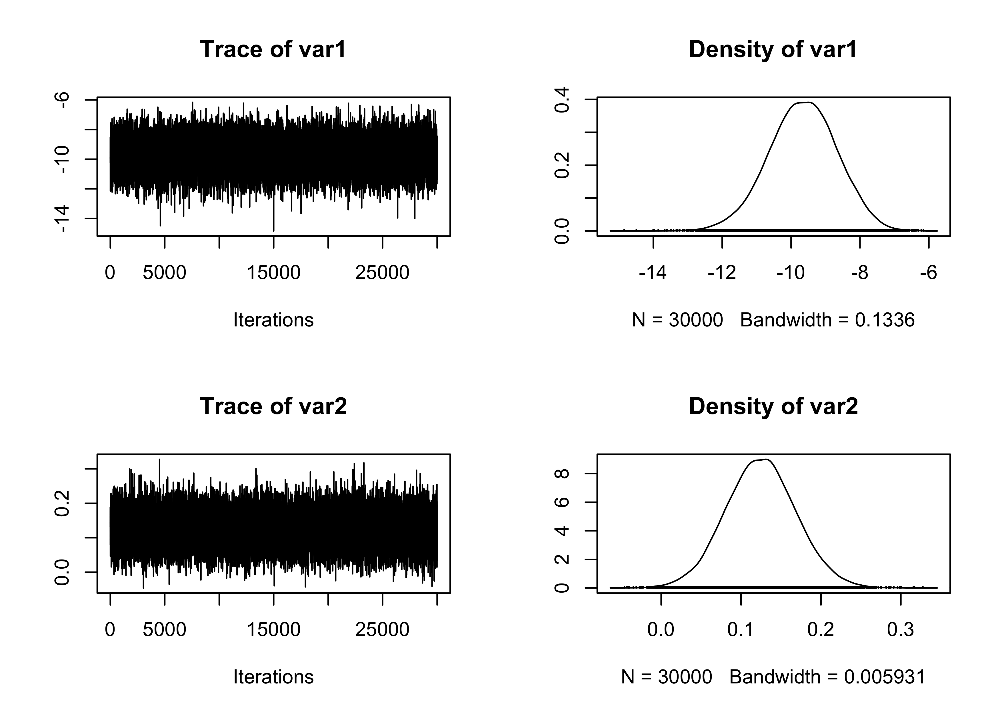
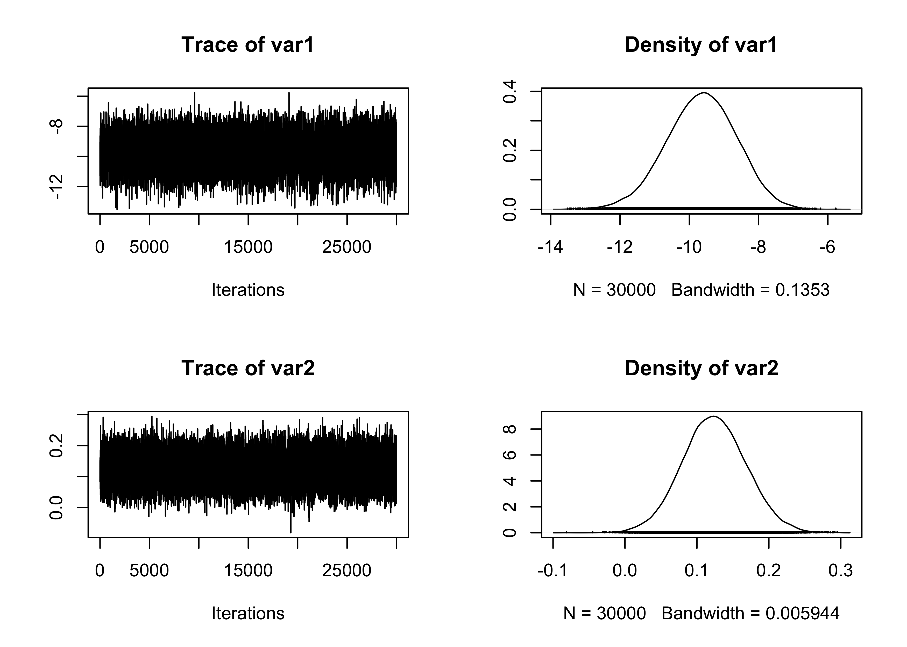

Computational Statistics II
MALA algorithm, Hamiltonian Monte Carlo & Pólya-gamma data augmentation
In this unit, we discuss several advanced MCMC strategies that have been presented in the slides of unit B.2 and slides of unit C.2, including MALA, Hamiltonian Monte Carlo and the Gibbs sampling based on the Pólya-gamma data augmentation.
We will implement these proposals using the “famous” Pima Indian dataset, as in the previous Markdown document B.1. Let me stress again that the purpose of this unit is mainly to present the implementation of the various MCMC algorithms and not make “inferences” about their general performance. Refer to the excellent paper by Chopin & Ridgway (2017) for a more comprehensive discussion on this aspect.
Pima indian dataset
We will use the Pima Indian dataset again, as in the previous Markdown document B.1. Importantly, note that in this document, we will not standardize the predictors to make the computational problem more challenging.
As done in Markdown document B.1, we will employ a relatively vague prior centered at 0, namely \beta \sim N(0, 100 I_p). Then, we implement the log-likelihood, the log-posterior, and the gradient of the likelihood.
# Log-likelihood of a logistic regression model
loglik <- function(beta, y, X) {
eta <- c(X %*% beta)
sum(y * eta - log(1 + exp(eta)))
}
# Log-posterior
logpost <- function(beta, y, X) {
loglik(beta, y, X) + sum(dnorm(beta, 0, 10, log = T))
}
# Gradient of the logposterior
lgradient <- function(beta, y, X) {
probs <- plogis(c(X %*% beta))
loglik_gr <- c(crossprod(X, y - probs))
prior_gr <- -beta / 100
loglik_gr + prior_gr
}
# Summary table for the six considered methods
summary_tab <- matrix(0, nrow = 6, ncol = 4)
colnames(summary_tab) <- c("Seconds", "Average ESS", "Average ESS per sec", "Average acceptance rate")
rownames(summary_tab) <- c("MH Laplace + Rcpp", "MALA", "MALA tuned", "HMC", "STAN", "Pólya-Gamma")Metropolis-Hastings (Laplace) and Rcpp
We first consider a random walk Metropolis-Hastings algorithm based on Rcpp implementation. The source code can be found this file. Again, we use the Fisher information matrix as a quick estimate for the covariance matrix. Refer to the slides of unit B.1 for more about this idea.
set.seed(123)
# Covariance matrix is selected via Laplace approximation
fit_logit <- glm(y ~ X - 1, family = binomial(link = "logit"))
p <- ncol(X)
S <- 2.38^2 * vcov(fit_logit) / p
# Running the MCMC
start.time <- Sys.time()
# MCMC
fit_MCMC <- as.mcmc(RMH_arma(R, burn_in, y, X, S)) # Convert the matrix into a "coda" object
end.time <- Sys.time()
time_in_sec <- as.numeric(difftime(end.time, start.time, units = "secs"))
# Diagnostic
summary(effectiveSize(fit_MCMC)) # Effective sample size Min. 1st Qu. Median Mean 3rd Qu. Max.
1103 1154 1163 1166 1192 1204 Min. 1st Qu. Median Mean 3rd Qu. Max.
24.93 25.16 25.79 25.75 26.01 27.19 Min. 1st Qu. Median Mean 3rd Qu. Max.
0.2682 0.2682 0.2682 0.2682 0.2682 0.2682 # Summary statistics
summary_tab[1, ] <- c(
time_in_sec, mean(effectiveSize(fit_MCMC)),
mean(effectiveSize(fit_MCMC)) / time_in_sec,
1 - mean(rejectionRate(fit_MCMC))
)
# Traceplot of the intercept
plot(fit_MCMC[, 1:2])MALA algorithm
The MALA algorithm is described in the slides of unit B.2. Here we propose a general implementation that specifies a pre-conditioning matrix S and a scaling parameter epsilon.
# R represents the number of samples
# burn_in is the number of discarded samples
# epsilon, S are tuning parameter
MALA <- function(R, burn_in, y, X, epsilon, S) {
p <- ncol(X)
out <- matrix(0, R, p) # Initialize an empty matrix to store the values
beta <- rep(0, p) # Initial values
A <- chol(S) # Cholesky of S
S1 <- solve(S) # Inverse of S
lgrad <- c(S %*% lgradient(beta, y, X)) # Compute the gradient
logp <- logpost(beta, y, X)
sigma2 <- epsilon^2 / p^(1 / 3)
sigma <- sqrt(sigma2)
# Starting the Gibbs sampling
for (r in 1:(burn_in + R)) {
beta_new <- beta + sigma2 / 2 * lgrad + sigma * c(crossprod(A, rnorm(p)))
logpnew <- logpost(beta_new, y, X)
lgrad_new <- c(S %*% lgradient(beta_new, y, X))
diffold <- beta - beta_new - sigma2 / 2 * lgrad_new
diffnew <- beta_new - beta - sigma2 / 2 * lgrad
qold <- -diffold %*% S1 %*% diffold / (2 * sigma2)
qnew <- -diffnew %*% S1 %*% diffnew / (2 * sigma2)
alpha <- min(1, exp(logpnew - logp + qold - qnew))
if (runif(1) < alpha) {
logp <- logpnew
lgrad <- lgrad_new
beta <- beta_new # Accept the value
}
# Store the values after the burn-in period
if (r > burn_in) {
out[r - burn_in, ] <- beta
}
}
out
}The first run of the MALA algorithm is performed using a diagonal matrix (i.e., no pre-conditioning). As detailed in the slides of unit B.2, this is expected to perform poorly.
set.seed(123)
epsilon <- 0.0017 # After some trial and error
# Running the MCMC
start.time <- Sys.time()
fit_MCMC <- as.mcmc(MALA(R = R, burn_in = burn_in, y, X, epsilon, S = diag(ncol(X)))) # Convert the matrix into a "coda" object
end.time <- Sys.time()
time_in_sec <- as.numeric(difftime(end.time, start.time, units = "secs"))
# Diagnostic
summary(effectiveSize(fit_MCMC)) # Effective sample size Min. 1st Qu. Median Mean 3rd Qu. Max.
2.900 9.358 27.201 44.321 46.238 166.223 Min. 1st Qu. Median Mean 3rd Qu. Max.
180.5 728.7 1208.5 2671.3 3283.2 10343.4 Min. 1st Qu. Median Mean 3rd Qu. Max.
0.5638 0.5638 0.5638 0.5638 0.5638 0.5638 # Summary statistics
summary_tab[2, ] <- c(
time_in_sec, mean(effectiveSize(fit_MCMC)),
mean(effectiveSize(fit_MCMC)) / time_in_sec,
1 - mean(rejectionRate(fit_MCMC))
)
# Traceplot of the intercept
plot(fit_MCMC[, 1:2])MALA algorithm with pre-conditioning
In this second implementation of MALA, we rely instead on the Fisher information matrix, as in the RWM example. This indeed leads to much better results.
set.seed(123)
epsilon <- 1.68 # After some trial and error
# Covariance matrix is selected via Laplace approximation
fit_logit <- glm(y ~ X - 1, family = binomial(link = "logit"))
S <- vcov(fit_logit)
# Running the MCMC
start.time <- Sys.time()
fit_MCMC <- as.mcmc(MALA(R = R, burn_in = burn_in, y, X, epsilon, S)) # Convert the matrix into a "coda" object
end.time <- Sys.time()
time_in_sec <- as.numeric(difftime(end.time, start.time, units = "secs"))
# Diagnostic
summary(effectiveSize(fit_MCMC)) # Effective sample size Min. 1st Qu. Median Mean 3rd Qu. Max.
8583 8762 9196 9063 9312 9409 Min. 1st Qu. Median Mean 3rd Qu. Max.
3.189 3.222 3.263 3.314 3.424 3.495 Min. 1st Qu. Median Mean 3rd Qu. Max.
0.5686 0.5686 0.5686 0.5686 0.5686 0.5686 # Summary statistics
summary_tab[3, ] <- c(
time_in_sec, mean(effectiveSize(fit_MCMC)),
mean(effectiveSize(fit_MCMC)) / time_in_sec,
1 - mean(rejectionRate(fit_MCMC))
)
# Traceplot of the intercept
plot(fit_MCMC[, 1:2])Hamiltonian Monte Carlo
The following HMC function implements Hamiltonian Monte Carlo for a general parametric model. As before, the object S represents a pre-conditioning matrix. This code is an adaptation of the one written by Neal (2011).
HMC <- function(R, burn_in, y, X, epsilon, S, L = 10) {
p <- ncol(X)
out <- matrix(0, R, p) # Initialize an empty matrix to store the values
beta <- rep(0, p) # Initial values
logp <- logpost(beta, y, X) # Initial log-posterior
S1 <- solve(S)
A1 <- chol(S1)
# Starting the Gibbs sampling
for (r in 1:(burn_in + R)) {
P <- c(crossprod(A1, rnorm(p))) # Auxiliary variables
logK <- c(P %*% S %*% P / 2) # Kinetic energy at the beginning of the trajectory
# Make a half step for momentum at the beginning
beta_new <- beta
Pnew <- P + epsilon * lgradient(beta_new, y, X) / 2
# Alternate full steps for position and momentum
for (l in 1:L) {
# Make a full step for the position
beta_new <- beta_new + epsilon * c(S %*% Pnew)
# Make a full step for the momentum, except at the end of the trajectory
if (l != L) Pnew <- Pnew + epsilon * lgradient(beta_new, y, X)
}
# Make a half step for momentum at the end.
Pnew <- Pnew + epsilon * lgradient(beta_new, y, X) / 2
# Negate momentum at the end of the trajectory to make the proposal symmetric
Pnew <- - Pnew
# Evaluate potential and kinetic energies at the end of the trajectory
logpnew <- logpost(beta_new, y, X)
logKnew <- Pnew %*% S %*% Pnew / 2
# Accept or reject the state at the end of the trajectory, returning either
# the position at the end of the trajectory or the initial position
if (runif(1) < exp(logpnew - logp + logK - logKnew)) {
logp <- logpnew
beta <- beta_new # Accept the value
}
# Store the values after the burn-in period
if (r > burn_in) {
out[r - burn_in, ] <- beta
}
}
out
}We run the HMC using the usual Fisher information matrix as a covariance matrix.
set.seed(123)
epsilon <- 0.25 # After some trial and error
L <- 10
# Covariance matrix is selected via Laplace approximation
fit_logit <- glm(y ~ X - 1, family = binomial(link = "logit"))
S <- vcov(fit_logit)
# Running the MCMC
start.time <- Sys.time()
fit_MCMC <- as.mcmc(HMC(R = R, burn_in = burn_in, y, X, epsilon, S, L)) # Convert the matrix into a "coda" object
end.time <- Sys.time()
time_in_sec <- as.numeric(difftime(end.time, start.time, units = "secs"))
# Diagnostic
summary(effectiveSize(fit_MCMC)) # Effective sample size Min. 1st Qu. Median Mean 3rd Qu. Max.
215765 222946 226610 225565 228360 233334 Min. 1st Qu. Median Mean 3rd Qu. Max.
0.1286 0.1314 0.1324 0.1331 0.1346 0.1390 Min. 1st Qu. Median Mean 3rd Qu. Max.
0.9892 0.9892 0.9892 0.9892 0.9892 0.9892 # Summary statistics
summary_tab[4, ] <- c(
time_in_sec, mean(effectiveSize(fit_MCMC)),
mean(effectiveSize(fit_MCMC)) / time_in_sec,
1 - mean(rejectionRate(fit_MCMC))
)
# Traceplot of the intercept
plot(fit_MCMC[, 1:2])Hamiltonian Monte Carlo (Stan)
For the sake of completeness, we also present the results obtained using the Stan software, which must be installed alongside the rstan R package. The logistic.stan is available in this repository. The following chunk of code compiles the model in C++.
We then sample the MCMC values and store the results.
set.seed(1234)
# Running the MCMC
start.time <- Sys.time()
fit_HMC <- sampling(
stan_compiled, # The stan file has been previously compiled
data = list(X = X, y = y, n = nrow(X), p = ncol(X)), # named list of data
chains = 1, # number of Markov chains
warmup = burn_in, # Burn-in iterations per chain
iter = R + burn_in # Total number of iterations per chain
)
SAMPLING FOR MODEL 'anon_model' NOW (CHAIN 1).
Chain 1:
Chain 1: Gradient evaluation took 2.7e-05 seconds
Chain 1: 1000 transitions using 10 leapfrog steps per transition would take 0.27 seconds.
Chain 1: Adjust your expectations accordingly!
Chain 1:
Chain 1:
Chain 1: Iteration: 1 / 35000 [ 0%] (Warmup)
Chain 1: Iteration: 3500 / 35000 [ 10%] (Warmup)
Chain 1: Iteration: 5001 / 35000 [ 14%] (Sampling)
Chain 1: Iteration: 8500 / 35000 [ 24%] (Sampling)
Chain 1: Iteration: 12000 / 35000 [ 34%] (Sampling)
Chain 1: Iteration: 15500 / 35000 [ 44%] (Sampling)
Chain 1: Iteration: 19000 / 35000 [ 54%] (Sampling)
Chain 1: Iteration: 22500 / 35000 [ 64%] (Sampling)
Chain 1: Iteration: 26000 / 35000 [ 74%] (Sampling)
Chain 1: Iteration: 29500 / 35000 [ 84%] (Sampling)
Chain 1: Iteration: 33000 / 35000 [ 94%] (Sampling)
Chain 1: Iteration: 35000 / 35000 [100%] (Sampling)
Chain 1:
Chain 1: Elapsed Time: 2.634 seconds (Warm-up)
Chain 1: 17.378 seconds (Sampling)
Chain 1: 20.012 seconds (Total)
Chain 1: end.time <- Sys.time()
time_in_sec <- as.numeric(difftime(end.time, start.time, units = "secs"))
fit_HMC <- as.mcmc(extract(fit_HMC)$beta)
# Diagnostic
summary(effectiveSize(fit_HMC)) # Effective sample size Min. 1st Qu. Median Mean 3rd Qu. Max.
30000 30000 30000 30818 31389 33627 Min. 1st Qu. Median Mean 3rd Qu. Max.
0.8921 0.9558 1.0000 0.9749 1.0000 1.0000 Min. 1st Qu. Median Mean 3rd Qu. Max.
1 1 1 1 1 1 # Summary statistics
summary_tab[5, ] <- c(
time_in_sec, mean(effectiveSize(fit_HMC)),
mean(effectiveSize(fit_HMC)) / time_in_sec,
1 - mean(rejectionRate(fit_HMC))
)
# Traceplot of the intercept
plot(fit_HMC[, 1:2])
Pólya-gamma data-augmentation
The Pólya-gamma data augmentation is described in the paper Polson, N. G., Scott, J. G. and Windle J. (2013). The simulation of the Pólya-gamma random variables is handled by the function rpg.devroye within the BayesLogit R package.
library(BayesLogit)
logit_Gibbs <- function(R, burn_in, y, X, B, b) {
p <- ncol(X)
n <- nrow(X)
out <- matrix(0, R, p) # Initialize an empty matrix to store the values
P <- solve(B) # Prior precision matrix
Pb <- P %*% b # Term appearing in the Gibbs sampling
Xy <- crossprod(X, y - 1 / 2)
# Initialization
beta <- rep(0, p)
# Iterative procedure
for (r in 1:(R + burn_in)) {
# Sampling the Pólya-gamma latent variables
eta <- c(X %*% beta)
omega <- rpg.devroye(num = n, h = 1, z = eta)
# Sampling beta
eig <- eigen(crossprod(X * sqrt(omega)) + P, symmetric = TRUE)
Sigma <- crossprod(t(eig$vectors) / sqrt(eig$values))
mu <- Sigma %*% (Xy + Pb)
A1 <- t(eig$vectors) / sqrt(eig$values)
beta <- mu + c(matrix(rnorm(1 * p), 1, p) %*% A1)
# Store the values after the burn-in period
if (r > burn_in) {
out[r - burn_in, ] <- beta
}
}
out
}set.seed(123)
# Running the MCMC
start.time <- Sys.time()
fit_MCMC <- as.mcmc(logit_Gibbs(R, burn_in, y, X, B, b)) # Convert the matrix into a "coda" object
end.time <- Sys.time()
time_in_sec <- as.numeric(difftime(end.time, start.time, units = "secs"))
# Diagnostic
summary(effectiveSize(fit_MCMC)) # Effective sample size Min. 1st Qu. Median Mean 3rd Qu. Max.
9947 14015 15400 14990 16649 18355 Min. 1st Qu. Median Mean 3rd Qu. Max.
1.634 1.802 1.951 2.068 2.145 3.016 Min. 1st Qu. Median Mean 3rd Qu. Max.
1 1 1 1 1 1 # Summary statistics
summary_tab[6, ] <- c(
time_in_sec, mean(effectiveSize(fit_MCMC)),
mean(effectiveSize(fit_MCMC)) / time_in_sec,
1 - mean(rejectionRate(fit_MCMC))
)
# Traceplot of the intercept
plot(fit_MCMC[, 1:2])
Results
The above algorithm’s summary statistics are reported in the table below.
| Seconds | Average ESS | Average ESS per sec | Average acceptance rate | |
|---|---|---|---|---|
| MH Laplace + Rcpp | 0.3050251 | 1165.75640 | 3821.83760 | 0.2682089 |
| MALA | 1.3590000 | 44.32131 | 32.61318 | 0.5637855 |
| MALA tuned | 1.3295691 | 9063.31983 | 6816.73470 | 0.5686190 |
| HMC | 8.1282759 | 225565.16881 | 27750.67830 | 0.9892330 |
| STAN | 20.3272889 | 30818.17168 | 1516.09848 | 1.0000000 |
| Pólya-Gamma | 5.8158290 | 14989.73418 | 2577.40282 | 1.0000000 |